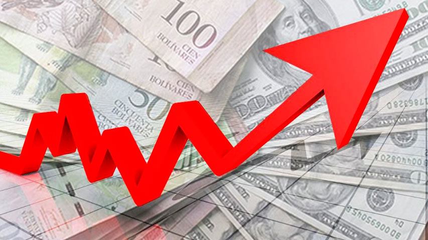

Los dos picos hiperinflacionarios sucedieron en dos momentos diferentes, 1989 (presidencia del radical Alfonsín) y 1990 (presidencia de Menem). El primer pico, conocido como hiperinflación del año 1989, comenzó en abril de ese año y pudo ser controlada, en forma temporaria, hacia septiembre de ese año mediante la aplicación del Plan Bonex por el gobierno del presidente Menem que había asumido el 8 de julio de ese mismo año. Con la devaluación del Austral, miles de personas pasaron hacia la pobreza: la hiperinflación devoró salarios, generó revueltas, saqueos y llevó al adelantamiento del traspaso del poder. La hiperinflación a fines del alfonsinismo provocó un aumento en el porcentaje de personas viviendo en la pobreza del 25 % a comienzos de 1989, al récord histórico de 47,3 % en octubre del mismo año. El segundo pico hiperinflacionario, se produjo a comienzos de 1990 y recién pudo ser controlado parcialmente hacia abril de ese año. De todos modos, la inflación continuó siendo muy elevada durante el resto del año. Finalmente, en abril de 1991, mediante la aplicación de la Ley de Convertibilidad del Austral, la inflación pudo ser reducida drásticamente.
El peso argentino fue creado mediante la Ley 22.707 del 6 de enero de 1983, y reemplazó al peso Ley 18.188. Este cambio de moneda se hizo para combatir la fuerte y larga inflación argentina que jaqueaba la economía del Proceso de Reorganización Nacional durante el mandato del dictador Bignone. De este modo, cada peso argentino equivalía a 10 000 pesos Ley 18.188, y a diferencia del anterior cambio de moneda no hubo resellado de billetes. La inflación en el período 1983-1985 siguió en ascenso y en 1985 el peso argentino fue reemplazado por una nueva moneda, el austral. Cuando el austral reemplazó al peso argentino, cada austral era equivalente a 1000 pesos argentinos.
Es el aumento generalizado y sostenido de los precios de los bienes y servicios existentes en el mercado durante un determinado período de tiempo. En Argentina se mantuvo en general en un solo dígito entre 1900 y 1944, aunque con picos de dos dígitos en 1900-1901, 1917-1918, 1920, 1933, y con varios años de alta deflación. El país mide la inflación a través del Índice de precios al consumidor (IPC) que calcula el Instituto Nacional de Estadísticas y Censos (INDEC). Varias provincias tienen sus propios centros oficiales de registro de la inflación en sus territorios. El gobierno que más inflación tuvo en la historia argentina fue el de Raúl Alfonsín (1983-1989), con un promedio anual de 592,28% y un pico hiperinflacionario en 1989 que llegó al 3079,5%. El gobierno que menos inflación tuvo fue el segundo mandato de Carlos Menem (1995-1999), con un promedio anual de 0,025%. La persistencia del fenómeno inflacionario en la economía argentina a lo largo del tiempo, junto con la incapacidad política de combatirla, hace que se un tema de larga data en Argentina con graves daños en el poder adquisitivo de sus ciudadanos a lo largo de su historia. Este año la tasa de variación anual del IPC en Argentina en agosto de 2023 ha sido del 124,4%, 10,9 puntos superior a la del mes anterior. La variación mensual del IPC (Índice de Precios al Consumo) ha sido del 12,4%, de forma que la inflación acumulada en 2023 es del 80,2%.